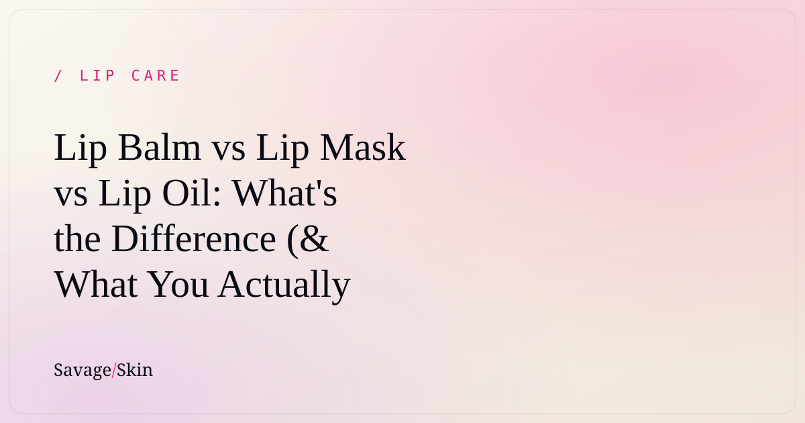

Lip Balm vs Lip Mask vs Lip Oil: What's the Difference (& What You Actually Need)?

Quick version: a lip balm protects, a lip mask deeply treats (usually overnight), and a lip oil hydrates with a glossy finish. They overlap a ton, which is exactly why the lip aisle is so confusing. You don't need all three — you need to know which job your lips actually need done. Here's the no-nonsense breakdown.
Lip balm — the everyday protector
What it does: coats and seals your lips to lock in moisture and shield against wind, cold, and sun. Usually wax- or butter-based, sometimes with SPF.
Best for: daily, on-the-go protection. The thing you reapply throughout the day.
The catch: a basic balm only sits on top. It protects, but it doesn't deeply repair already-damaged lips. The good ones now include actual treatment ingredients (this is the "lip skinification" shift — more on that below).
Lip mask — the deep treatment
What it does: a thicker, richer, longer-wearing treatment — often worn overnight as a "lip sleeping mask" — packed with hydrating and repairing ingredients (hyaluronic acid, ceramides, shea, squalane). It works while you're not eating/drinking/talking it off.
Best for: chronically dry, flaky, or chapped lips that need real repair, not just a top coat. Also the move before makeup if your lips are too dry to hold color.
The catch: too thick and slippery for some people to wear all day — traditionally a nighttime step.
Lip oil — the glossy hydrator
What it does: lightweight nourishing oils that hydrate and add a glossy, often tinted finish. The Gen Z replacement for sticky gloss.
Best for: people who want shine + a little care + sometimes a hint of color, without the tack of old-school gloss.
The catch: oils hydrate and feel great but are usually lighter on the deep-repair and long-lasting-seal front than a mask or balm.
Side-by-side
| Lip Balm | Lip Mask | Lip Oil | |
|---|---|---|---|
| Main job | Protect + seal | Deep treat/repair | Hydrate + glossy finish |
| Best time | All day | Overnight (mostly) | Day, for shine |
| Texture | Waxy/buttery | Thick/rich | Light/slippy |
| Fixes badly chapped lips? | Somewhat | Yes | Not really |
| Adds shine/color? | A little | Not usually | Yes |
So what do you actually need?
- Lips fine, just want shine? Lip oil.
- Lips dry-ish, need daily upkeep? A treatment balm (one with real hydrating ingredients, not just wax).
- Lips genuinely chapped, peeling, cracked? A lip mask to repair — ideally morning and night.
- All of the above / don't want a shelf of products? A hybrid.
The case for a hybrid (why the lines are blurring)
Here's the trend reshaping the whole category: 73% of people now want active, treatment ingredients in their lip care (up from 31% in 2023), and treatment-style lip products are growing while plain balms decline. People are tired of buying a balm and a mask and an oil to do overlapping jobs.
That's the whole idea behind our Savage Skin lip treatment: one product that works as a daily balm, an overnight mask, and a plumping treatment — so you get the deep-repair of a mask with the everyday wearability of a balm, no three-product routine required. If you're going to own one lip product, owning one that does all three jobs just makes sense.
Still battling seriously chapped lips? Start with our full guide on how to fix chapped lips for good.
Frequently asked questions
Is a lip mask better than a lip balm?
Not "better" — different. A mask treats and repairs more deeply; a balm protects day-to-day. Badly chapped lips benefit from a mask; everyday upkeep is a balm's job. Hybrids do both.
Can I use a lip mask during the day?
Yes, though traditional masks are thick/glossy. Lighter hybrid treatments are designed to wear day and night.
Do I need a lip oil and a lip balm?
Usually not. Pick based on your goal: shine = oil, protection/repair = balm or mask. A hybrid can cover all of it.
What ingredients should a good lip product have?
Hydrators like hyaluronic acid and glycerin, plus sealing/repairing ingredients like squalane, shea, ceramides, or lanolin. Avoid heavy menthol/camphor/fragrance if your lips are sensitive.